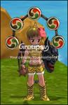

Credits : Lugia
ดาวที่ได้มาทั้งหมดสามารุนำไปแลกกับ NPC : Anniversary Soul
ที่หมายเลข 5 ในรูปแผนที่ข้างล่าง
ของที่แลกได้ทั้งหมด
ดาว 1 ดวง = Quest Point 1 Point
ดาว 2 ดวง = Commemoratibe Box 1 ชิ้น
ดาว 3 ดวง = Reset Status
ดาว 3 ดวง = Reset Skill

หมายเลข 1
Rita's Hallelry
เงื่อนไข ผ่านเควส Nekomata Akane

หมายเลข 2
Honey , Darling
เงื่อนไข ผ่านเควสแต่งงาน

หมายเลข 3
Noble Aunt In Market
เงื่อนไข ผ่านเควสเข้าอัพทาว [คำตอบ Rulan]
เงื่อนไข เป็น Secondary Class [Technical / Expert]

หมายเลข 4
Burhuski
เงื่อนไข ผ่านการทำมาริโอเน็ต Burhuski มาแล้ว
หมายเลข 6
Goldo
เงื่อนไข ผ่าน Nekomata Yamabuki
เงื่อนไข ผ่านเควสฟักไข่มังกรสีใดก็ได้
หมายเลข 7
Waiting Girl , Miss Homeland
เงื่อนไข ผ่านเควส Skill Point ที่ Morg [ส่งนาฬิกา]
หมายเลข 8
Tsukuyomi
เงื่อนไข ผ่านเควสในเทศกาลชมจันทร์

หมายเลข 9
Sewing Aunt
เงื่อนไข ผ่านเควส Nekomata Momo
หมายเลข 10
Book of Store Owner
เงื่อนไข ผ่านเควส Nekomata Sora
หมายเลข 11
Hungary
เงื่อนไข ผ่านเควส Nekomata Anzu
หมายเลข 12
Tita
เงื่อนไข ผ่านเควสในเทศกาล Valentine

หมายเลข 13
Snowman
เงื่อนไข ผ่านเควสในเทศกาล X'mas

หมายเลข 14
Orge Young Priest
เงื่อนไข ผ่านเควสในเทศกาลปาถั่วไล่ยักษ์
หมายเลข 15
Corrugated Cardboard
เงื่อนไข ผ่าน Nekomata New Midori

หมายเลข 16
Mar 1 ดวง
เงื่อนไข ผ่านเควส Nekomata Kurumi & Wakana
หมายเลข 17
Gadou Hunter , Solo 1 ดวง
เงื่อนไข ผ่านเควส Nekomata Sumire

หมายเลข 18
Broken Elecel 1 ดวง
เงื่อนไข ผ่านเควส Nekomata Ai

หมายเลข 19
Resistance Leader
เงื่อนไข ผ่านเควส WRP ที่ Dominion World

หมายเลข 20
Dumpty
เงื่อนไข ส่ง Bouquet of Love 3 ช่อ
กระทู้ทีเกี่ยวข้อง หากท่านๆยังไม่ได้ทำเควสข้างต้น
[Quest] Nekomata (Shoulder Devil)
>>Event รับ Skill Point เพิ่ม<<
[Saga8]วิธีไปโลก Dominion และการเข้าร่วมสงคราม
[ข้อมูล Saga 8] วิธีทำมาริโอเนต Burhusky
เครดิต จขกท.ของแต่ละกระทู้นั่นแหละ
 [/quote][/b]
[/quote][/b]